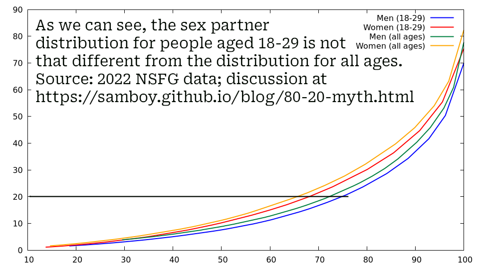

My departed (and probably first) wife, who passed away on September 12, 2014, would had celebrated her birthday today. She was a very beautiful women, and I’m glad we got to spend the happiest six years of her life together.
Her daughter—our daughter—is doing really well and I’m glad to have her in my life today. I am dating again and moving on, but I will always honor Marina’s memory.
Famous people who share a birthday today with Marina include Mark Twain (Samuel Clemens) and Winston Churchill.
I wrote extensively about Marina in a previous blog.

This continues my discussion of the 80/
The 80/ I have run the stats on just 18-29 year olds and the numbers are not
that different than they are for all ages.
If anything, the trend of there being more virgins of both genders as
well as the most promiscuous people being even more promiscuous
continues: While the “top” 20% of men have more partners compared to
all ages, the “top” 20% of women also have more partners.
In more detail:
20.66% of men (18-29) have 75.7% of lifetime female sex partners
19.96% of women (18-29) have 68.0% of lifetime male sex partners
Virginity rates for 18-29 year olds: 30% men, 25% women
19.45% of men (all ages) have 71.5% of lifetime female sex partners
19.49% of women (all ages) have 64.8% of lifetime male sex partners
Virginity rates for all ages: 22% men, 18% women
Note that:
The most promiscuous people have even more sex partners, for both men
and women
In particular, the difference between all ages and 18-29 is that the
“top” 20% have 3-4% more of the lifetime partner count, again for both
men and women
Virginity rates are about 8% higher with younger people, once again
for both men and women
I discuss in depth the 80/